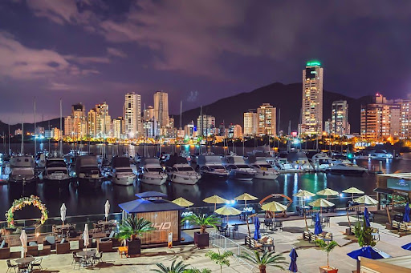

Itajai é minha cidade natal.
Itajai é uma cidade localizada no estado de Santa Catarina, no sul do Brasil. É conhecida por sua bela costa, praias e porto movimentado. Itajai é um importante centro econômico e turístico na região, oferecendo uma variedade de atrações, como o Mercado Público, a Igreja Matriz do Santíssimo Sacramento e o Parque Natural Municipal Raimundo Gonçalez Malta. Além disso, a cidade é famosa por suas festas tradicionais, como a Festa do Divino Espírito Santo e a Oktoberfest de Itajai.
Itajai é uma cidade encantadora que combina a beleza natural com uma rica cultura e história. Com suas praias deslumbrantes, gastronomia deliciosa e eventos culturais vibrantes, Itajai é um destino imperdível para quem visita Santa Catarina.
